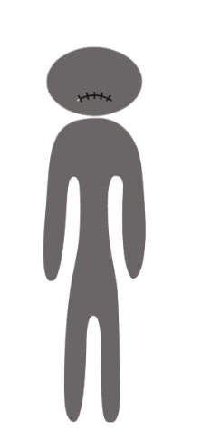

La anorexia nerviosa es un trastorno de la conducta alimentaria caracterizado por una restricción severa de la ingesta de alimentos, un miedo intenso a ganar peso y una percepción distorsionada de la imagen corporal.
Es importante comprender que la anorexia es una enfermedad seria que requiere tratamiento profesional especializado y apoyo continuo tanto médico como psicológico.
